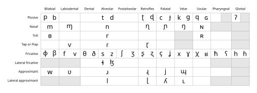
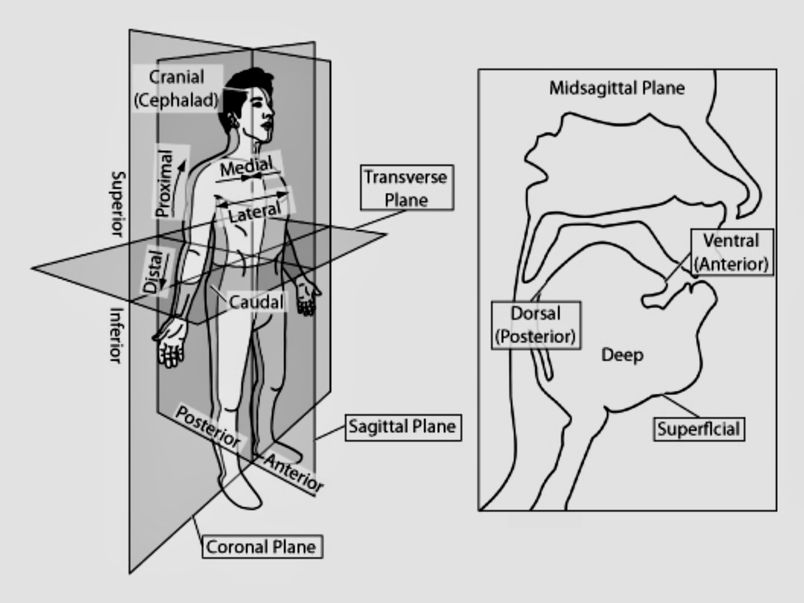
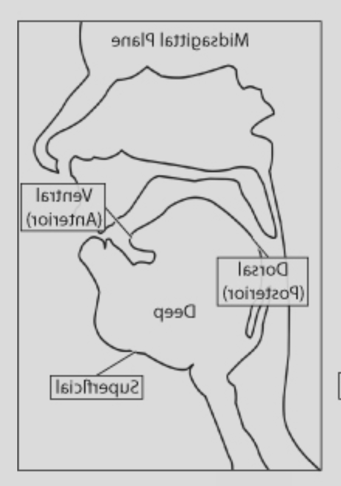
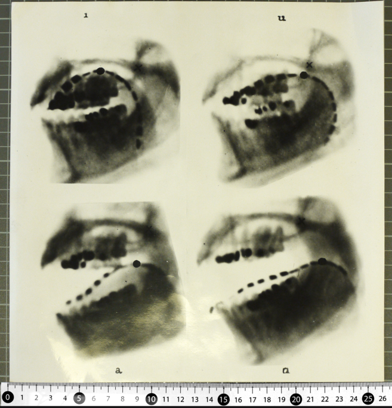
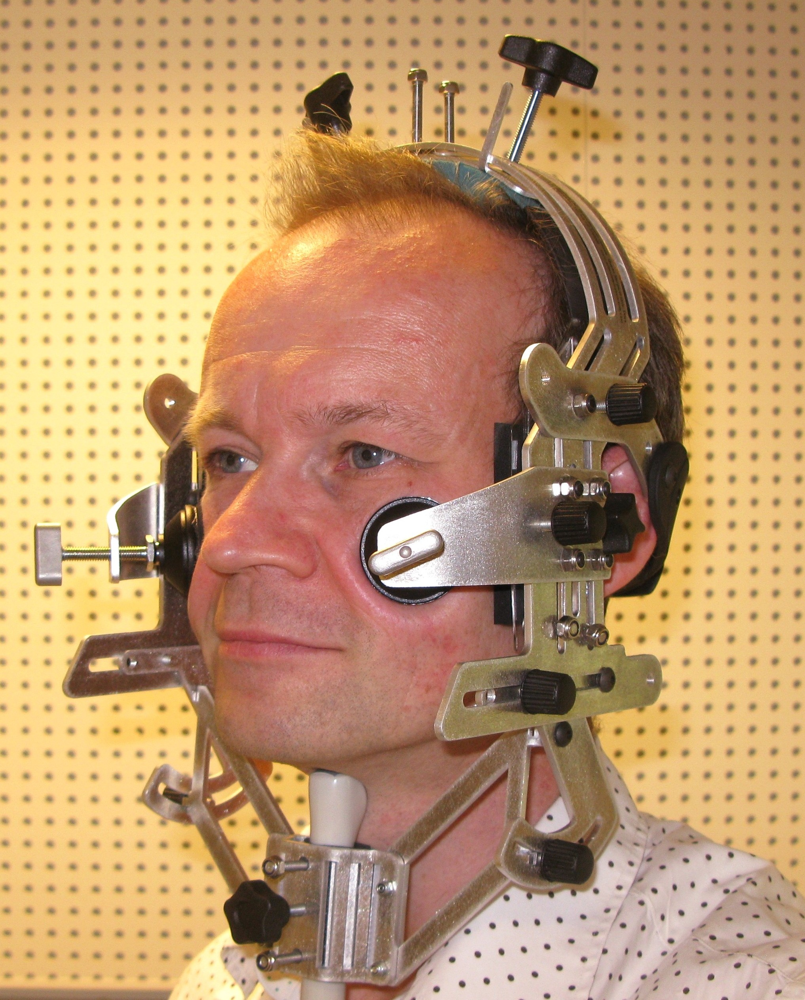
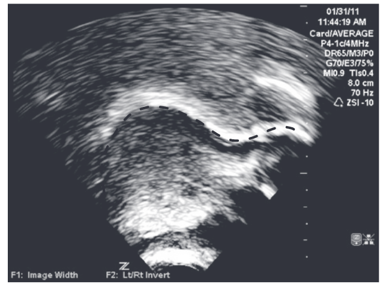
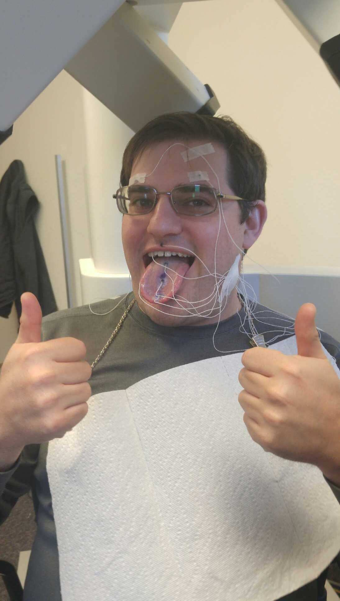
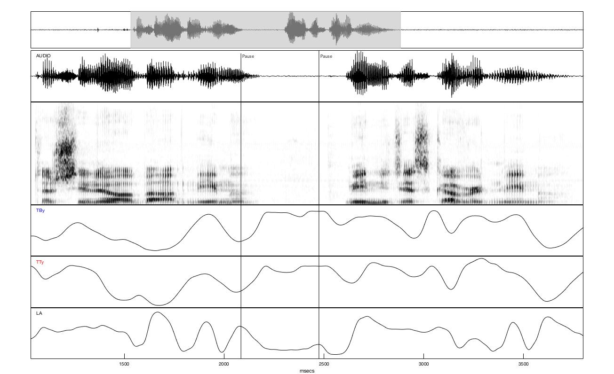

Speech Anatomy 1
Imaging
Seeing Speech
Maybe you think speech looks like this:

Seeing speech
Speech is a physical activity
Today
Tools we use for looking at speech.
Starting some anatomy.
Conceptualizing the head

| Posterior | Anterior |
|---|---|
| “back” | “front” |
Conceptualizing the head

Tools of the trade
X-Ray
anterior ⬅️
➡️ posterior

Tools of the trade
X-Ray
Pros?
- Better than nothing
Cons?
Can’t image fleshy bits well
Harmful to health
Static/low framerate
Tools of the trade
Ultrasound tongue imaging

Tools of the trade
Ultrasound tongue imaging
posterior ⬅️
➡️ anterior

Lin et al. (2014)
Tools of the trade
Ultrasound tongue imaging
Pros?
- Relatively non-invasive.
Cons?
Can only image fleshy bits.
Can’t image across an air gap.
Relatively low frame rate.
Tools of the trade
Electromagnetic Articulography (EMA)


Tools of the trade
Electromagnetic Articulography (EMA)
Pros?
Very high time resolution.
Spatially precise.
Cons?
Invasive.
Harder to visualize.
Expensive equipment.
Tools of the trade
MRI
posterior ⬅️
➡️ anterior
Tools of the trade
MRI
Pros?
Non invasive.
High quality images.
Cons?
Low frame rate (but improving).
Very loud.
Speakers must be lying down.
Expensive equipment.
Seeing Speech
References
Lin, Susan, Patrice Speeter Beddor, and Andries W. Coetzee. 2014. Gestural Reduction , Lexical Frequency , and Sound Change : A Study of Post-Vocalic / l /. 5 (1): 9–36. https://doi.org/10.1515/lp-2014-0002.